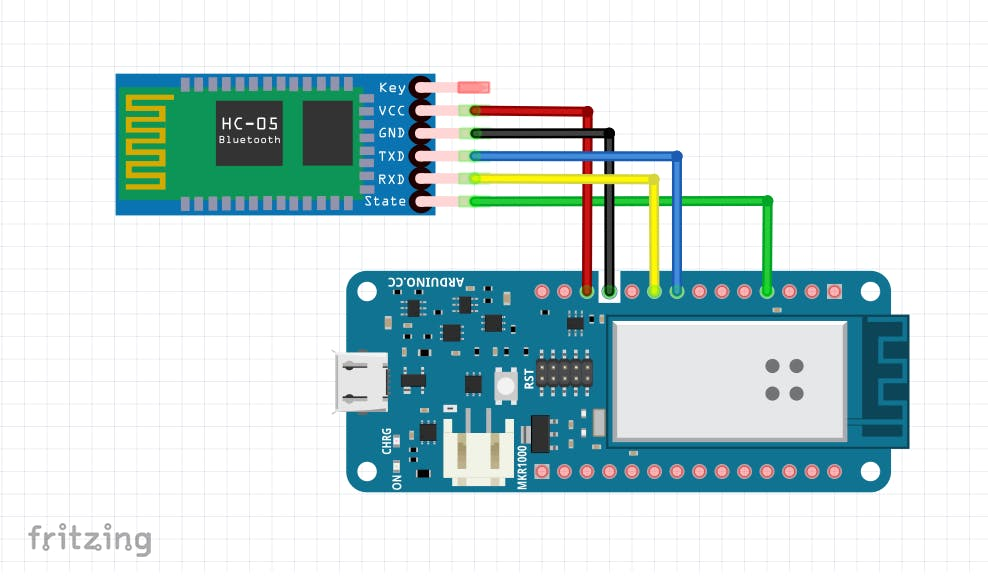
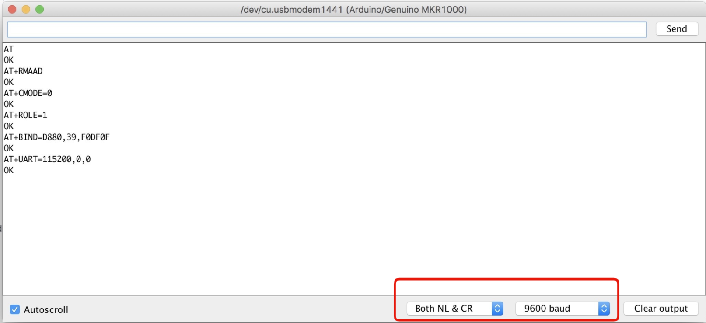
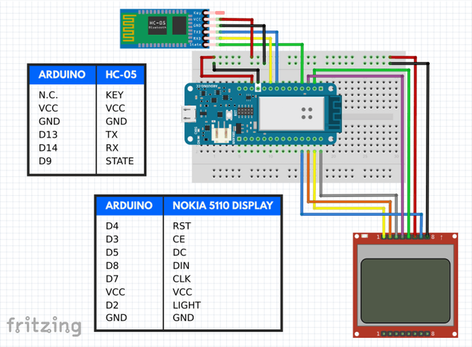

An Arduino Project
The creators of MediWatch are:
Feel free to contact us via LinkedIn if you have any questions or concerns. Below we will take you through each step that we undertook to complete the project.Credit must be given to Abdullah Sadiq over at the Arduino Project Hub as his project Alz Assistant provided us with a lof of information and code. For our project we needed to modify some sections, code and added a buzzer for sound alerts You can view Abdullah's project HERE.
We first need to make sure that when we power on the Sensor, our HC-05 bluetooth module will search for the sensors MAC address and connect to it by default. To do this we need to wire up our HC-05 bluetooth module to our audrino and we need to flash a small arduino sketch to the arduino which allows us to communicate with the HC-05 bluetooth module and send commands to it via "AT mode". AT command mode allows you to interrogate the Bluetooth module and to change some of the settings; things like the name, the baud rate, whether or not it operates in slave mode or master mode.
To do this, we first need to flash a sketch/code to the arduino that will allow us to send and receive AT commands from the arduino: CODE LINK
Next we need to wire the HC-05 to the Arduino. You can copy the wiring diagram below to achieve this. 
Now we need to put the HC-05 bluetooth module into AT mode. To do this we need to hold the power button on the HC-05 while we plug in its VCC/Power cable. Once the red LED displays on the HC-05 you can release the power button on the HC-05. You can test that the HC-05 is in AT mode by opening your Serial Monitor and sending the
Now we can open the audrino IDEs serial monitor and test if we can communicate with the HC-05 bluetooth module. To test if you are correctly in AT mode, simply type AT into the serial monitor and click Send. If OK is returned, you are good to continue. If not you are not successfully in AT mode and need to repeat the steps above. In the image you can see the full list of AT commands that need to be sent and the expected reply. 
Once this is done and you have successfully received an OK response from each command, your HC-05 will now connect toy uor sensor by default when powered on.
We were required to install the following three libraries via the ardruino IDE in order for our code th compile correctly:
We can now flash our main project code to our arduino. If you installed the above libraries correctly, there should be no completion errors.
CODE LINKIt is now time to wire up the components, you can follow the following wiring diagram:
If everything is flashed and wired up correctly, you should get a similar result when you power on the arduino